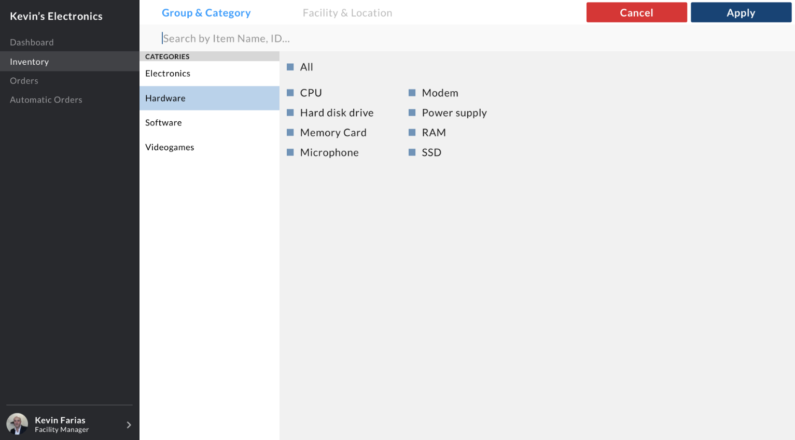

During February 2017, the University of Waterloo Marketing Association and Nspire Waterloo collaborated with Clear Spider to host a UI/UX Case Competition. Clear Spider is a cloud-based inventory management system with clients such as Coca Cola, Amazon, eBay, and Shopify. I worked with three other designers on this case competition. We ended up taking 2nd place with our redesigned system.
Clear Spider was built in mid 2000s and since then, the system has been continually updated with new features and functionality as clients demanded more. Because of the many new functions and features, the system became difficult to use due to disorganization and oversaturation of functionality.
Clear Spider wanted us to focus on three areas of functionality:
- Asset Tracking: Items needed to be tracked with data such as barcode, location, and category. Items also need to be searchable and filterable.
- Order Management: Orders go through multiple stages from start to finish. Users need to be able to create orders and each need to include data so the item can be tracked.
- Inventory Optimization: Auto replenishment feature to determine when and how much to place an order for new items.
User Research
Since this case competition was only 2 days, there was no time for us to do some research. Instead, Clear Spider provided us with three primary personas. Along with the information Clear Spider provided us, our team also made proto-personas and user stories based on educated guesses and what we already know.
Hands-on Staff
This type of user is someone who physically touches the inventory items. Sample job titles include Warehouse Packer/Picker/Shipper. The hands-on staff needs to find out what work needs to be done (e.g. shipping, packing), change the status of orders and report to their manager. To make their lives easier, they want to quickly find items and their locations to fulfil orders.
Pain points:
- Cluttered interface that slowed down workflow
- Constantly reporting changes to facility manager
Facility Manager
This user is someone who needs to keep track of inbound and outbound orders and as well as to account for everything in their facility. They also need to make sure they have enough and not too much of anything. Sample job titles include Warehouse Manager, Supply Chain Manager and Director of Facilities. The facility manager wants to find out what orders need to be made based on stock levels, distribute tasks among employees, and add new items to the database.
Pain points:
- Can’t quickly see/find items that need restocking due to lack of filtering/searching and oversaturation of features
- Wasting time manually repeating the same orders
Executive Level/Office Administrator
This type of user is someone who looks at operations at a business or strategic level. Sample job titles include VP's and Directors. Because of time constraints, our team did not focus much on this user as we believed this persona was not as important as the other two personas.
Wireframes
We started this case competition by brainstorming and creating proto-personas, user tasks, and stories. There were also optionals/bonus that we could include in our redesign such as designing an omni-search and data exports/imports.
Planning out user flows and tasks
Some low-fi wireframes we drew on the whiteboard. We were planning how to lay out the database and as well as creating a filtering system.
Low-fi wireframes on whiteboard
Site Map & User Flows
Because of the limited time we had for the case competition we were not able to redesign the entire system. We created a site map for the features we created.

Create Order Flow
One of the key uses as a manager or hands-on staff would be to create a new order. They would first select the whether the order was coming in or going out, then they would choose a process type, which includes replenishment, fulfillment, or vendor return. Then they would select the date they wish to receive the order by if it was inbound, or date to ship by if it was outbound.
Filter Flow
To satisfy the need of finding an item quick and having a better workflow, we designed a filter where the user can find items by location or category. Because there are so many facets and filters, we decided to keep this page separate.
Final Designs & Prototype
Even though we decided that executive level users were not as important as the other two users, we still wanted to include their needs in our redesign. We decided to design a dashboard so that the facility manager and executive level users are able to view insights and data so that they can make well-informed decisions for the business.
Dashboard for the redesigned system
To satisfy the need to track and manage orders, we designed a process bar for the shipment status of items. This screen specifies what type of order this is, the source, quantity, item, and destination.
Order details
As there are a large number of different orders and items in a warehouse or business, it would be very difficult to search and filter for a specific item the user is looking for. We designed an easy to use filter and search system so they can search by category, type of product, and location.
Filter and search system
The redesign of the inventory system is now easier to read by removing some visual elements, features, and as well as using a new font and layout. To satisfy the need of restocking inventory at the right time, we added a low alert on inventory in the table. If an item reaches below the low alert number, the item will be highlighted in red to notify the user.
New inventory layout
Prototype
After completing the screens for this project, we prototyped our redesign on InVision and later pitched our solution to the judges. You can view our prototype here.
Conclusion
The Clear Spider redesign was my first UI/UX project I helped designed which has allowed me to experience methods used in the UX process. This project was a month after my User Experience Design class which was great to apply what I've learned in my class. Designing enterprise software and redesigning a oversatured and bloated system has allowed me to improve a lot in this field as this was a difficult challenge to tackle.